Skills · 5단계 자기 평가
쓸 수 있는 기술과 그 깊이
Spring Boot
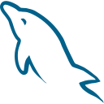
4/ 5MySQL
Docker
Python
FastAPI
Redis
AWS
Project 1 · SEMES 기업연계 2026.10 – 2026.11 · 6명 · 팀장 / 백엔드
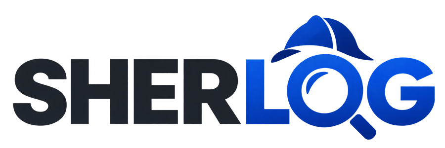
흩어진 반도체 설비 로그를 하나의 실행 흐름으로 복원하고, 정상 패턴과 비교해 핵심 오류와 근거 원문을 찾아 주는 Windows 사후 분석 프로그램입니다.
내 역할 · 팀장 / 백엔드
- 멘토링 정리, 브랜치 전략과 Jira 규칙·자동화
- FastAPI·SQLite 분석 실행·취소·조회 API
- Electron ↔ Python 연동과 Windows 설치 패키지
- 결과 DB 보존·버전 이전, 동시 분석 3건
기술 스택
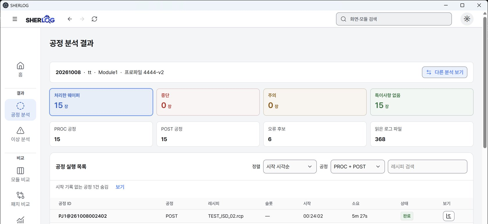
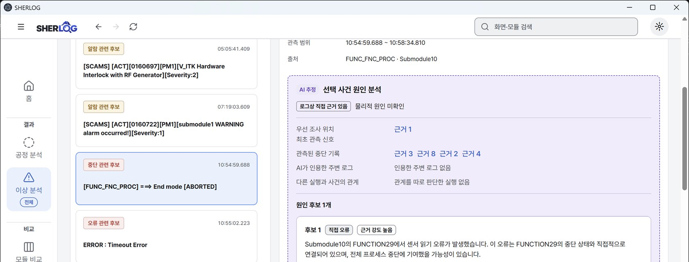
Project 2 2026.07 – 2026.08 · 6명 · 백엔드 테크 리더
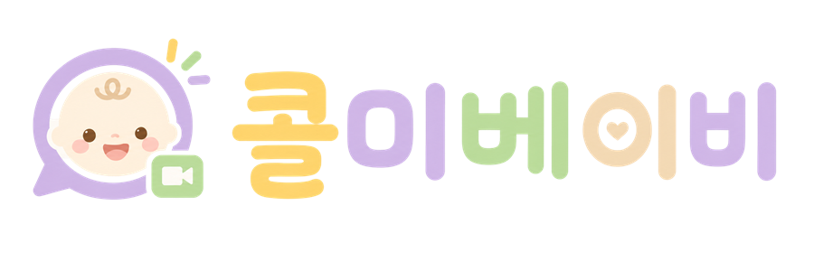
부모와 아이의 영상통화에 STT, 대화 주제 추천, 공동 그림판, AI 그림일기를 연결한 가족 소통 서비스입니다.
내 역할 · 백엔드 테크 리더
- 백엔드 API 계약·통화방 상태 흐름 조율
- Webhook·Redis로 이탈과 종료를 구분하는 재접속 복구
- 그림일기 AI를 비동기·검증 파이프라인으로 분리
기술 스택
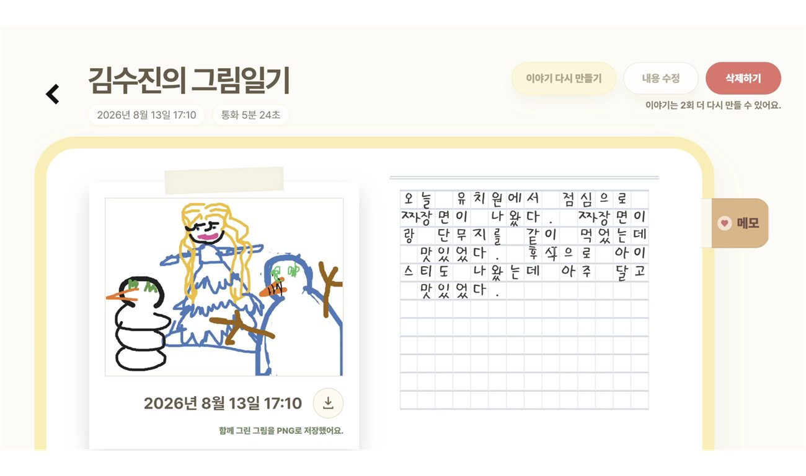
Project 3 2026.08 – 2026.09 · 6명 · AI 담당 · 백엔드 일부
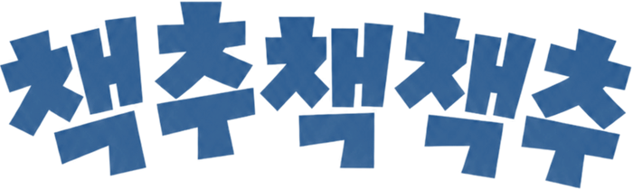
서재에 기록한 책과 도서관 대출 데이터를 바탕으로, 추천 이유와 함께 다음에 읽을 책을 골라 주는 개인 서재·도서 추천 서비스입니다.
내 역할 · AI 담당 (백엔드 일부)
- 후보 44만 권 검증·임베딩·Qdrant 색인
- 5개 신호 하이브리드 랭킹과 Spring Boot 연동
- GMS 호출 비용 제어와 배포 인덱스 검증
기술 스택
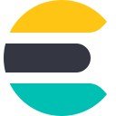
ElasticsearchQdrant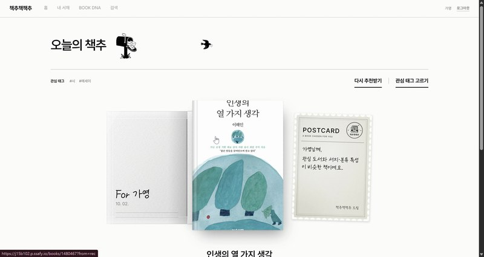
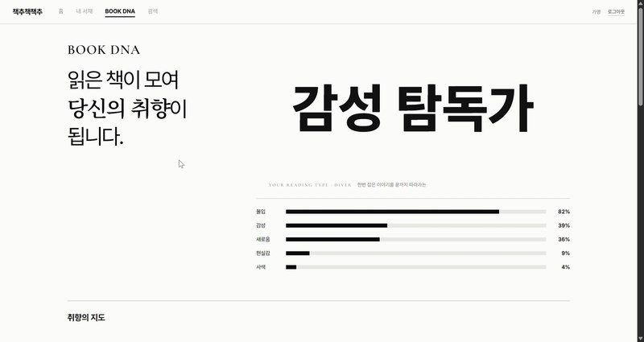
Project 4 2025.08 – 2025.11 · 5명 · 백엔드 테크 리더
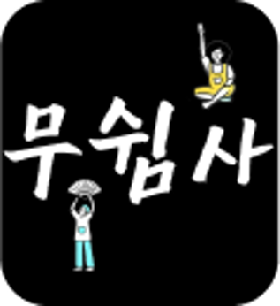
무쉼사무더위 쉼터를 찾는 사람들
폭염 때 현재 위치에서 가장 가까운 무더위쉼터를 빠르게 찾고, 이용 후기와 폭염 알림을 받을 수 있는 서비스입니다.
내 역할 · 백엔드 테크 리더
- DB 모델링, Spring Batch로 6만여 쉼터 동기화
- GitHub Actions·Docker·AWS 배포 자동화
- JWT 인증, FCM 폭염 알림·리뷰 리마인더
기술 스택
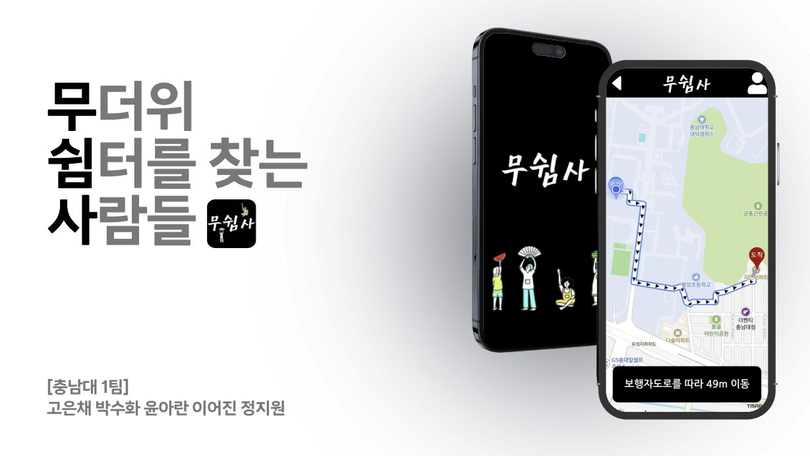
Project 5 2025.03 – 2025.12 · 3명 · 팀장
수어프라이즈드라이브스루를 위한 온디바이스 수어 통역 앱
음성으로만 주문받는 드라이브스루에서 청각장애인도 주문할 수 있도록, 스마트폰 하나로 수어는 글자로, 점원의 말도 글자로 바꿔 주는 앱입니다. 인터넷 없이 단말 안에서 모두 처리합니다.
내 역할 · 팀장 / AI 모델 · Android
- 수어 데이터 수집 앱(Android)과 JSON → NumPy 변환 도구(Python) 개발
- LSTM 지문자 분류 모델 학습, TFLite 변환과 앱 탑재
- 수어 인식·한글 조합, 오프라인 음성 인식(Sherpa-ONNX) 구현
기술 스택
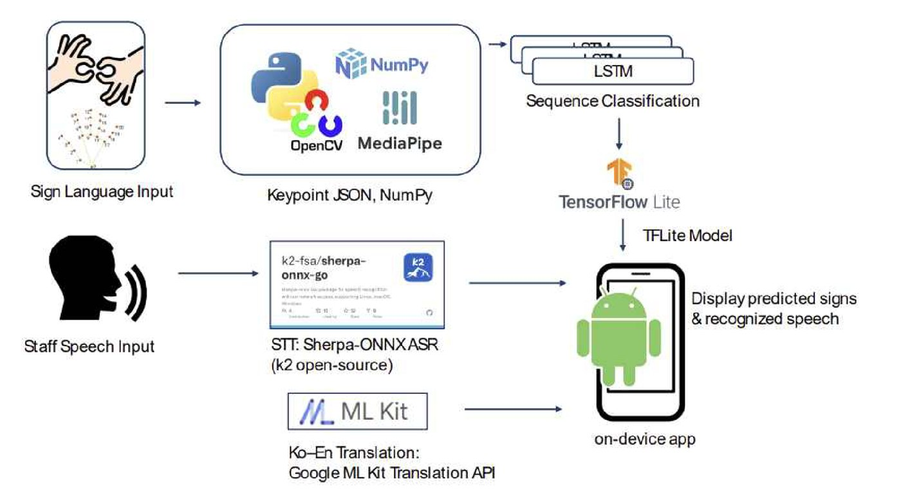